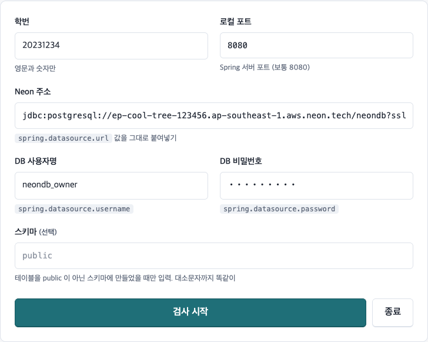
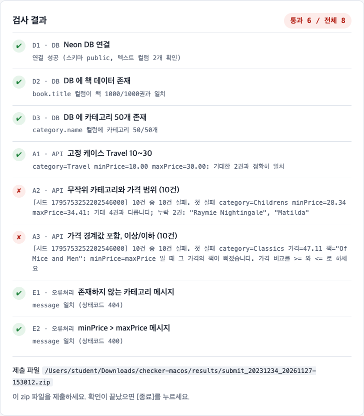

DB 과제 채점기 안내
과제를 제출하기 전에 채점기로 내 서버를 검사하고, 채점기가 만든 결과 파일을 함께 제출합니다. 처음 실행할 때 보안 경고가 뜨니 마감 전에 미리 한 번 실행해 보세요.
제출 마감 12월 4일 23:55 · 늦은 제출은 받지 않습니다
제출할 것
프로젝트 zip
과제 명세대로 빌드를 클린한 Maven 프로젝트와 README.
채점 결과 zip
채점기 옆
results폴더의submit_학번_날짜-시각.zip. 여러 번 검사했다면 가장 최근 파일 하나를 풀지 말고 그대로 냅니다.
실행 방법
Spring Boot 서버를 먼저 실행합니다.
받은 zip을 풀고 채점기를 더블클릭하면 브라우저에 입력 창이 열립니다.
학번, 포트(보통
8080),application.properties의 DB 주소·사용자명·비밀번호를 넣고 검사 시작을 누릅니다.
입력 예시. Neon 주소는 spring.datasource.url값을 그대로 붙여넣습니다. 스키마는 public 이 아닌 곳에 테이블을 만들었을 때만 넣습니다.✘가 있으면 이유를 보고 고친 뒤 다시 검사합니다. 맨 아래에 제출할 zip 파일의 위치가 나옵니다.

= 와 <= 로 하라는 안내가 보임" width="728" height="831">결과 예시. 가격을 >,<로 비교해서 A2·A3가 실패한 경우입니다. 이유에 나온 대로>=,<=로 고치면 통과합니다.
macOS 유의사항
- zip은 Finder에서 더블클릭으로 풉니다. 다른 압축 프로그램이나 Windows에서 푼 뒤 옮기면 실행 권한이 빠져 열리지 않을 수 있습니다.
- 처음 실행하면 "확인할 수 없습니다" 경고가 뜹니다. 완료를 누르고(휴지통 아님) 시스템 설정 → 개인정보 보호 및 보안 → 아래쪽 "checker-macos이(가) 차단되었습니다" 옆 그래도 열기 → Mac 암호 → 다시 그래도 열기. 한 번만 하면 됩니다.
- 더블클릭하면 터미널 창이 같이 열립니다. 채점기 본체이므로 검사가 끝날 때까지 닫지 마세요.
- 결과 파일은 채점기 옆
results폴더에 생깁니다. 정확한 위치는 결과 화면 아래에 나옵니다. - M1 이후 Mac과 Intel Mac 모두 같은 파일을 씁니다.
Windows · Linux
- Windows: zip을 오른쪽 클릭 → 압축 풀기 후 실행합니다. zip 안에서 바로 실행하면 채점기가 멈추고 압축을 풀라고 안내합니다. "Windows의 PC 보호" 창이 뜨면 추가 정보 → 실행.
- Linux: 압축을 풀고 터미널에서
./checker-linux-amd64.
채점기가 기록하는 정보
검사 결과와 함께 컴퓨터 이름과 MAC 주소를 암호화해 기록합니다. DB 비밀번호는 저장하지 않고, DB는 읽기만 합니다.